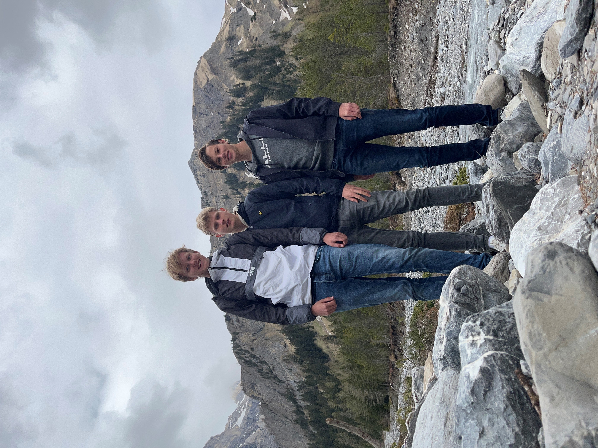

De reis
Na het behalen van mijn Havo diploma in 2021 ben ik in 2022 samen met twee vrienden door Europa gaan reizen. We hebben veel landen gezien. We zijn veel in grote steden geweest maar we hebben ook veel natuur gezien. Het was een ervaring om nooit te vergeten en daarom vond ik het een leuk onderwerp voor mijn schoolproject.
